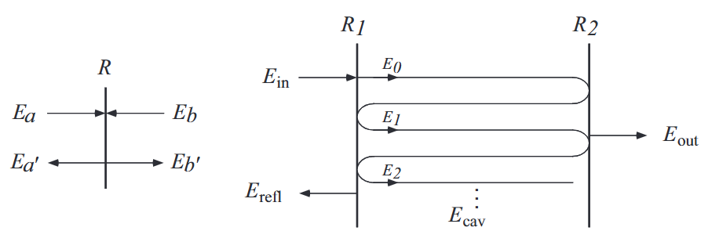
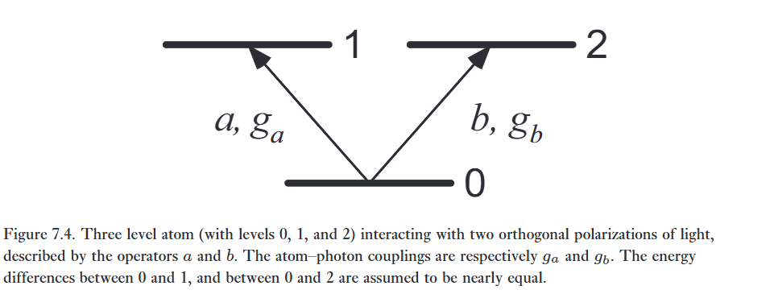
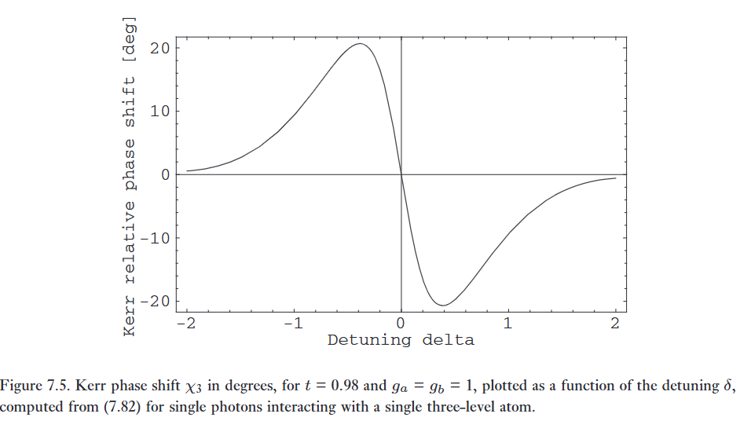
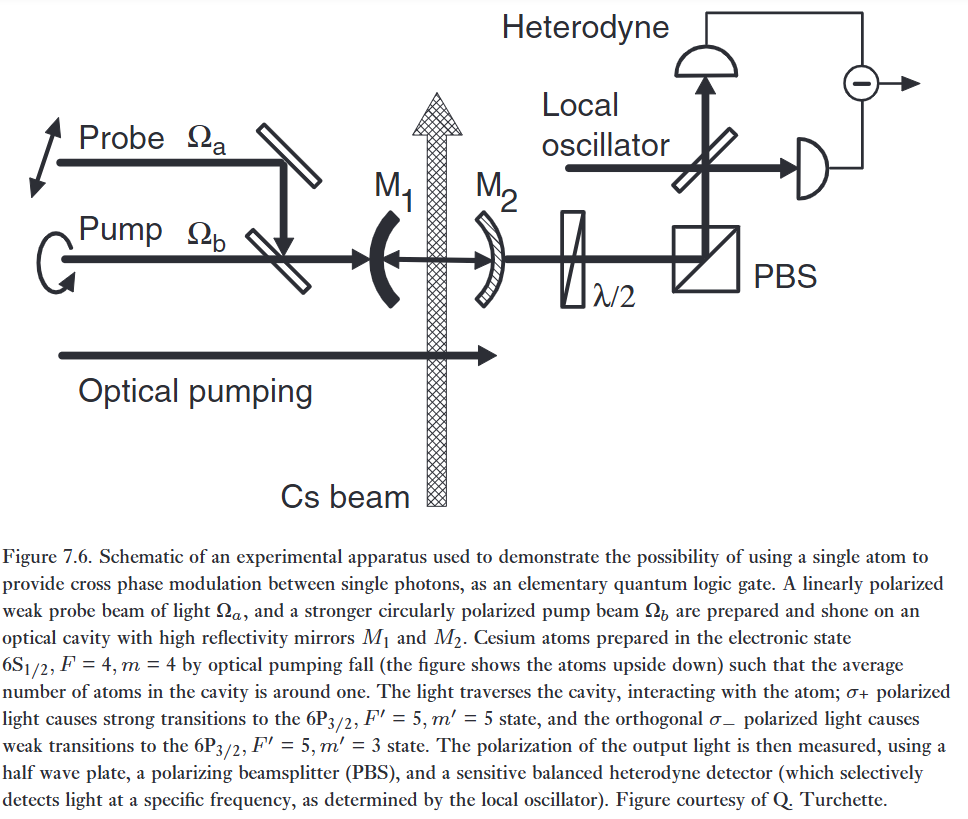

Điện động lực học lượng tử hốc cộng hưởng (Cavity quantum electrodynamics – QED) là một lĩnh vực nghiên cứu tiếp cận một chế độ quan trọng liên quan đến sự ghép cặp (coupling) của các nguyên tử đơn lẻ với chỉ một vài mode quang học. Về mặt thực nghiệm, điều này trở nên khả thi bằng cách đặt các nguyên tử đơn lẻ bên trong các hốc cộng hưởng quang học có hệ số phẩm chất Q rất cao; bởi vì chỉ có một hoặc hai mode điện từ tồn tại bên trong hốc, và mỗi mode này đều có cường độ điện trường rất lớn, nên sự ghép cặp lưỡng cực giữa nguyên tử và trường là rất mạnh. Nhờ hệ số Q cao, các photon bên trong hốc có cơ hội tương tác nhiều lần với các nguyên tử trước khi thoát ra ngoài. Về mặt lý thuyết, kỹ thuật này mang lại một cơ hội độc nhất vô nhị để điều khiển và nghiên cứu các hệ lượng tử đơn lẻ, mở ra nhiều cơ hội trong lĩnh vực hỗn loạn lượng tử (quantum chaos), điều khiển hồi tiếp lượng tử (quantum feedback control), và tính toán lượng tử.
Cụ thể, các phương pháp QED hốc cộng hưởng đơn nguyên tử mang lại một giải pháp tiềm năng cho thế tiến thoái lưỡng nan của máy tính lượng tử quang học đã được mô tả ở mục trước. Các photon đơn lẻ có thể là những vật mang thông tin lượng tử tốt, nhưng chúng cần một môi trường nào đó khác để có thể tương tác với nhau. Bởi vì là các vật liệu khối (bulk materials), các môi trường quang học phi tuyến Kerr truyền thống không đáp ứng thỏa đáng nhu cầu này. Tuy nhiên, các nguyên tử đơn lẻ được cô lập tốt không nhất thiết phải chịu chung những hiệu ứng mất kết hợp tương tự, và hơn nữa, chúng cũng có thể tạo ra sự điều biến pha chéo (cross phase modulation) giữa các photon. Trên thực tế, điều gì sẽ xảy ra nếu trạng thái của các photon đơn lẻ có thể được truyền tải một cách hiệu quả tới và đi từ các nguyên tử đơn lẻ, vốn có các tương tác điều khiển được? Kịch bản đầy tiềm năng này chính là chủ đề của mục này.
1. Physical apparatus
Hai thành phần thực nghiệm chính của một hệ QED hốc cộng hưởng là hốc cộng hưởng điện từ và nguyên tử. Chúng ta bắt đầu bằng việc mô tả vật lý cơ bản của các mode hốc cộng hưởng, và sau đó tóm tắt những ý tưởng cơ bản về cấu trúc nguyên tử cũng như sự tương tác của nguyên tử với ánh sáng.
Fabry–Perot cavity
Tương tác chính tham gia vào QED hốc cộng hưởng là tương tác lưỡng cực \vec{d} \cdot \vec{E} giữa mô-men lưỡng cực điện \vec{d} và điện trường \vec{E}. Tương tác này có thể lớn đến mức nào? Trong thực tế rất khó để thay đổi độ lớn của \vec{d}; tuy nhiên, \vert{}\vec{E}\vert{} lại có thể tiếp cận được bằng thực nghiệm, và một trong những công cụ quan trọng nhất để hiện thực hóa một điện trường rất lớn trong một dải tần số hẹp và trong một thể tích không gian nhỏ, chính là hốc cộng hưởng Fabry–Perot.
Trong phép gần đúng rằng điện trường là đơn sắc và chiếm giữ một mode không gian duy nhất, nó có thể được mô tả bằng cơ học lượng tử một cách rất đơn giản:
Như được mô tả trong Hộp 7.5, những phép gần đúng này là phù hợp đối với trường bên trong một hốc cộng hưởng Fabry–Perot. Ở đây, k = \omega/c là tần số không gian của ánh sáng, E_0 là độ lớn cường độ trường, \vec{\epsilon} là vector phân cực, và r là vị trí mà tại đó ta muốn xác định trường. a và a^\dagger là các toán tử sinh và hủy đối với các photon trong mode đó, và hành xử như đã mô tả trong Mục 7.4.2. Lưu ý rằng Hamiltonian chi phối sự tiến hóa của trường trong hốc đơn giản là
H_{\text{field}} = \hbar\omega a^\dagger a , \tag{7.57}
và điều này nhất quán với khái niệm bán cổ điển rằng năng lượng là tích phân theo thể tích của \vert{}\vec{E}\vert{}^2 bên trong hốc.
ImportantHộp 7.5: Hốc cộng hưởng Fabry–Perot
Một thành phần cơ bản của hốc cộng hưởng Fabry–Perot là một tấm gương tráng bạc một phần, tại đó ánh sáng tới E_a và E_b bị phản xạ một phần và truyền qua một phần, tạo ra các trường đầu ra E_{a'} và E_{b'}. Các trường này liên hệ với nhau thông qua phép biến đổi unita
trong đó R là hệ số phản xạ của gương, và vị trí của dấu ‘-’ là một quy ước được chọn như trên để thuận tiện cho việc tính toán.

(Hình vẽ trong Hộp 7.5: Bên trái: Một mặt gương thẳng đứng có hệ số phản xạ R; hai sóng tới E_a (từ trái sang) và E_b (từ phải sang) gặp gương cho ra hai sóng ló E_{a'} (hướng sang trái) và E_{b'} (hướng sang phải). Bên phải: Hai gương song song có hệ số phản xạ R_1 và R_2. Chùm sáng tới E_{\text{in}} đi từ bên trái xuyên qua gương R_1 tạo thành sóng E_0 bên trong hốc, sau đó phản xạ qua lại liên tiếp giữa R_2 và R_1 tạo thành các sóng E_1, E_2, \dots tổng hợp nên trường nội hốc E_{\text{cav}}. Một phần ánh sáng phản xạ ngược ra bên trái tạo thành E_{\text{refl}}, và một phần truyền lọt qua gương R_2 sang bên phải tạo thành E_{\text{out}}.)
Một hốc cộng hưởng Fabry–Perot được tạo thành từ hai gương phẳng song song có hệ số phản xạ R_1 và R_2, với ánh sáng E_{\text{in}} chiếu vào từ bên ngoài như minh họa trong hình. Bên trong hốc, ánh sáng nảy qua nảy lại giữa hai gương, sao cho trường điện từ tích lũy thêm một độ dịch pha e^{i\varphi} sau mỗi vòng khứ hồi (round-trip); \varphi là một hàm phụ thuộc vào chiều dài đường đi và tần số của ánh sáng. Do đó, sử dụng phương trình (7.53), ta tìm được trường bên trong hốc là
trong đó E_0 = \sqrt{1-R_1} E_{\text{in}}, và E_k = -e^{i\varphi}\sqrt{R_1 R_2} E_{k-1}. Tương tự, ta tìm được E_{\text{out}} = e^{i\varphi/2}\sqrt{1-R_2} (lưu ý: sách in thiếu thừa số E_{\text{cav}} ở cuối biểu thức này), và E_{\text{refl}} = \sqrt{R_1} E_{\text{in}} + \sqrt{1-R_1}\sqrt{R_2} e^{i\varphi} E_{\text{cav}}.
Một trong những đặc trưng quan trọng nhất của hốc cộng hưởng Fabry–Perot đối với mục đích của chúng ta là công suất của trường bên trong hốc dưới dạng một hàm theo công suất đầu vào và tần số của trường,
Có hai khía cạnh đáng chú ý. Thứ nhất, tính chọn lọc tần số được quyết định bởi hệ thức \varphi = \omega d / c, trong đó d là khoảng cách giữa hai gương, c là tốc độ ánh sáng, và \omega là tần số của trường. Về mặt vật lý, hiện tượng này nảy sinh do sự giao thoa tăng cường và giao thoa triệt tiêu giữa trường bên trong hốc với ánh sáng phản xạ từ bề mặt trước. Và thứ hai, tại trạng thái cộng hưởng, trường trong hốc đạt giá trị cực đại xấp xỉ bằng 1/(1-R) lần trường tới. Tính chất này vô cùng quý giá đối với điện động lực học lượng tử hốc cộng hưởng (cavity QED).
NoteBài tập 7.15:
Hãy vẽ đồ thị của phương trình (7.55) dưới dạng một hàm theo độ lệch cộng hưởng trường (field detuning) \varphi, với R_1 = R_2 = 0.9.
Chỉ cần thay R_1 và R_2 vào phương trình (7.55) là được:
Cho đến trước mục này của chương, chúng ta mới chỉ thảo luận về các photon, hoặc các tương tác chẳng hạn như sự điều biến pha chéo giữa các photon thông qua sự trung gian của một môi trường bán cổ điển. Bây giờ, chúng ta hãy chuyển sự chú ý sang các nguyên tử, cấu trúc điện tử của chúng, và các tương tác của chúng với photon. Đây tất nhiên là một lĩnh vực nghiên cứu rất sâu sắc và đã phát triển hoàn thiện; chúng ta sẽ chỉ mô tả một phần nhỏ của nó có liên quan trực tiếp đến tính toán lượng tử.
Các trạng thái riêng năng lượng điện tử của một nguyên tử có thể rất phức tạp (xem Hộp 7.6), nhưng đối với mục đích của chúng ta, việc mô hình hóa một nguyên tử như chỉ có hai trạng thái là một phép gần đúng tuyệt vời. Phép gần đúng nguyên tử hai mức (two-level atom) này có giá trị bởi vì chúng ta sẽ quan tâm đến tương tác với ánh sáng đơn sắc và, trong trường hợp này, các mức năng lượng liên quan duy nhất là những mức thỏa mãn hai điều kiện: hiệu năng lượng của chúng khớp với năng lượng của các photon tới, và các tính đối xứng (‘quy tắc chọn lọc’ – ‘selection rules’) không ngăn cản sự chuyển dời. Những điều kiện này nảy sinh từ các định luật bảo toàn cơ bản đối với năng lượng, mô-men động lượng, và tính chẵn lẻ (parity). Bảo toàn năng lượng chẳng qua chỉ là điều kiện rằng
\hbar\omega = E_2 - E_1 , \tag{7.58}
trong đó E_2 và E_1 là hai trị riêng năng lượng của nguyên tử. Các yêu cầu về bảo toàn mô-men động lượng và tính chẵn lẻ có thể được minh họa bằng cách xem xét phần tử ma trận của \hat{r} giữa hai hàm sóng orbital, \langle l_1, m_1 \vert{} \hat{r} \vert{} l_2, m_2 \rangle. Không mất tính tổng quát, chúng ta có thể lấy \hat{r} nằm trong mặt phẳng \hat{x}-\hat{y}, sao cho nó có thể được biểu diễn theo các hàm cầu điều hòa (spherical harmonics, Hộp 7.6) dưới dạng
\hat{r} = \sqrt{\frac{3}{8\pi}} \left[ (-r_x + i r_y) Y_{1,+1} + (r_x + i r_y) Y_{1,-1} \right] \tag{7.59}
Trong cơ sở này, các số hạng liên quan trong \langle l, m_1 \vert{} \hat{r} \vert{} l, m_2 \rangle (lưu ý: sách in nhầm chỉ số l thay vì l_1 và l_2) là
Hãy nhớ lại rằng m = \pm 1; tích phân này chỉ khác không khi m_2 - m_1 = \pm 1 và \Delta l = \pm 1. Điều kiện thứ nhất là sự bảo toàn mô-men động lượng, và điều kiện thứ hai là tính chẵn lẻ, dưới phép gần đúng lưỡng cực nơi mà \langle l_1, m_1 \vert{} \hat{r} \vert{} l_2, m_2 \rangle trở nên có ý nghĩa. Những điều kiện này chính là các quy tắc chọn lọc vốn đóng vai trò quan trọng trong phép gần đúng nguyên tử hai mức.
NoteBài tập 7.16: (Quy tắc chọn lọc lưỡng cực điện)
Hãy chỉ ra rằng biểu thức (7.60) chỉ khác không khi m_2 - m_1 = \pm 1 và \Delta l = \pm 1.
Trong thực tế, ánh sáng không bao giờ đơn sắc một cách hoàn hảo; nó được tạo ra từ một nguồn nào đó chẳng hạn như tia laser, trong đó các mode dọc, nhiễu bơm, và các nguồn khác làm phát sinh một độ rộng vạch phổ hữu hạn. Ngoài ra, một nguyên tử ghép cặp với thế giới bên ngoài không bao giờ có các trạng thái riêng năng lượng được xác định một cách hoàn hảo; những nhiễu loạn nhỏ chẳng hạn như các điện thế thăng giáng ở lân cận, hoặc thậm chí sự tương tác với chân không, làm cho mỗi mức năng lượng bị nhòe đi và trở thành một phân bố có độ rộng hữu hạn.
Tuy nhiên, bằng cách lựa chọn cẩn thận nguyên tử và năng lượng kích thích, đồng thời tận dụng các quy tắc chọn lọc, người ta có thể sắp xếp các điều kiện sao cho phép gần đúng nguyên tử hai mức trở nên cực kỳ chuẩn xác. Toàn bộ mục đích của quy trình này là trong phép gần đúng đó, nếu \vert{}\psi_1\rangle và \vert{}\psi_2\rangle là hai mức năng lượng được chọn, thì các phần tử ma trận của \hat{r} là
trong đó r_0 là một hằng số nào đó, và Y là một toán tử Pauli (Mục 2.1.3; việc chúng ta thu được Y thay vì X không thực sự quan trọng – đó chỉ là vấn đề quy ước, và sự thuận tiện cho các tính toán về sau). Điều này sẽ có ý nghĩa quan trọng trong việc mô tả các tương tác giữa nguyên tử và điện trường tới. Bản thân Hamiltonian của nguyên tử, trong không gian con hai mức này, đơn giản là
H_{\text{atom}} = \frac{\hbar\omega_0}{2} Z , \tag{7.66}
trong đó \hbar\omega_0 là hiệu năng lượng của hai mức, bởi vì hai trạng thái này là các trạng thái riêng năng lượng.
ImportantHộp 7.6: Các mức năng lượng của một nguyên tử Các electron của một nguyên tử hành xử giống như các hạt nằm trong một chiếc hộp ba chiều, với Hamiltonian có dạng
trong đó hai số hạng đầu tiên mô tả sự cân bằng giữa động năng của các electron với lực hút Coulomb của các electron mang điện tích âm đối với hạt nhân mang điện tích dương, H_{\text{rel}} là số hạng hiệu chỉnh tương đối tính, H_{\text{ee}} mô tả các tương tác ghép cặp electron–electron và những đóng góp từ bản chất fermion của các electron, H_{\text{so}} là tương tác spin–quỹ đạo, thứ có thể được diễn giải là spin của electron tương tác với từ trường sinh ra bởi chuyển động quỹ đạo của chính nó quanh nguyên tử, và H_{\text{hf}} là tương tác siêu tinh tế (hyperfine interaction): spin của electron tương tác với từ trường sinh ra bởi hạt nhân. Các trạng thái riêng năng lượng của H_{\text{A}} nhìn chung được phân loại khá tốt theo ba số nguyên hoặc bán nguyên (các số lượng tử): n, số lượng tử chính; l, mô-men động lượng quỹ đạo; và m, thành phần hình chiếu theo trục \hat{z} của nó. Ngoài ra, S, tổng spin của electron, và I, spin của hạt nhân, thường đóng vai trò quan trọng. Các trị riêng của H được xác định một cách gần đúng tới bậc \alpha^2 bởi n, tới bậc nhỏ hơn một chút bởi H_{\text{ee}}, tới bậc \alpha^4 bởi H_{\text{rel}} và H_{\text{so}}, và tới bậc \approx 10^{-3}\alpha^4 bởi H_{\text{hf}}, trong đó \alpha = 1/137 là hằng số cấu trúc tinh tế (fine structure constant) không thứ nguyên.
Việc dẫn xuất số lượng tử n rất đơn giản và tuân theo các nghiệm phương trình Schrödinger một chiều thông thường cho một hạt trong hộp, bởi vì thế năng giam giữ Coulomb chỉ phụ thuộc vào khoảng cách hướng tâm. Tuy nhiên, mô-men động lượng quỹ đạo là một đặc trưng của không gian ba chiều xứng đáng được giải thích đôi chút. Các tính chất cốt lõi nảy sinh từ sự phụ thuộc góc của biểu diễn tọa độ của H_{\text{A}}, trong đó \vec{p} trở thành toán tử Laplace \vec{\nabla}^2, cho ra phương trình Schrödinger
(lưu ý: trong sách in thiếu số mũ 2 ở tử số đạo hàm \frac{d\Phi(\varphi)}{d\varphi^2}), trong đó \theta và \varphi là các tọa độ cầu thông thường, còn \Phi và \Theta là các hàm riêng mà chúng ta mong muốn tìm. Các nghiệm Y_{lm}(\theta, \varphi) = \Theta_{lm}(\theta)\Phi_m(\varphi) chính là các hàm cầu điều hòa (spherical harmonics)
Trong các phương trình này, -l \le m \le l, và có thể chứng minh được rằng m và l bắt buộc phải là số nguyên hoặc bán nguyên. l được gọi là mô-men động lượng quỹ đạo, còn m là thành phần của nó dọc theo trục \hat{z}. Tương tự, spin electron S và spin hạt nhân I có các thành phần tương ứng là m_s và m_i. Như bạn có thể thấy, việc mô tả các trạng thái năng lượng của một nguyên tử có thể khá phức tạp! Tóm lại: đối với mục đích của chúng ta, ta có thể coi các trị riêng năng lượng của một nguyên tử được xác định bởi bảy con số: n, l, m, S, m_s, I, và m_i.
2. Hamiltonian
Tương tác \vec{d} \cdot \vec{E} giữa một nguyên tử và một điện trường bị giam giữ trong hốc cộng hưởng có thể được xấp xỉ khá tốt bằng một mô hình đơn giản hơn nhiều, trong phép gần đúng nguyên tử hai mức, sử dụng sự lượng tử hóa của trường bên trong hốc cộng hưởng, và kích thước cực nhỏ của electron so với bước sóng của trường. Sử dụng thực tế rằng \vec{d} \propto \hat{r} (độ lớn lưỡng cực điện bằng điện tích nhân với khoảng cách), chúng ta có thể kết hợp phương trình (7.56) với (7.65) để thu được Hamiltonian tương tác
H_I = -igY(a - a^\dagger) , \tag{7.67}
trong đó chúng ta đã chọn r = 0 làm điểm đặt nguyên tử (và do đó tính giá trị của \vec{E} tại đó), đồng thời định hướng nguyên tử sao cho \hat{r} thẳng hàng một cách thích hợp với vector điện trường. g là một hằng số nào đó (chúng ta không cần bận tâm đến các giá trị cụ thể ở đây, mà chỉ cần dạng thức của nó) mô tả độ mạnh của tương tác. Số ảo i xuất hiện đơn giản là để cho phép g là số thực, bởi vì H_I bắt buộc phải là toán tử Hermite. H_I có thể được rút gọn thêm nữa bằng cách nhận ra rằng nó chứa các số hạng nhìn chung là nhỏ; để thấy được những số hạng này, sẽ rất hữu ích khi định nghĩa các toán tử nâng và hạ Pauli,
Các số hạng chứa \sigma_+ a^\dagger và \sigma_- a dao động ở tần số gấp đôi các tần số đáng quan tâm, vốn là \omega và \omega_0, và việc loại bỏ chúng là một phép gần đúng khá tốt (phép gần đúng sóng quay – rotating wave approximation), dẫn chúng ta đến Hamiltonian toàn phần H = H_{\text{atom}} + H_{\text{field}} + H_I,
H = \frac{\hbar\omega_0}{2} Z + \hbar\omega a^\dagger a + g(a^\dagger \sigma_- + a \sigma_+) . \tag{7.70}
Một lần nữa, xin nhắc lại: các toán tử Pauli tác động lên nguyên tử hai mức, a^\dagger, a là các toán tử sinh và hủy tác động lên trường một mode, \omega là tần số của trường, \omega_0 là tần số của nguyên tử, và g là hằng số ghép cặp cho tương tác giữa nguyên tử và trường. Đây chính là công cụ lý thuyết nền tảng trong nghiên cứu QED hốc cộng hưởng, Hamiltonian Jaynes–Cummings, thứ mô tả các tương tác giữa các nguyên tử hai mức và một trường điện từ.
Hamiltonian này có thể được viết dưới một dạng thuận tiện khác bằng cách lưu ý rằng N = a^\dagger a + Z/2 là một hằng số của chuyển động, nghĩa là [H, N] = 0, từ đó ta tìm thấy
H = \hbar\omega N + \delta Z + g(a^\dagger \sigma_- + a \sigma_+) , \tag{7.71}
trong đó \delta = (\omega_0 - \omega)/2 được gọi là độ lệch cộng hưởng (detuning) – hiệu tần số giữa trường và cộng hưởng nguyên tử. Hamiltonian này, Hamiltonian Jaynes–Cummings, là vô cùng quan trọng, và chúng ta sẽ dành gần như toàn bộ phần còn lại của chương để nghiên cứu các tính chất cũng như các dạng biểu hiện của nó trong những hệ vật lý khác nhau.
NoteBài tập 7.17: (Các trạng thái riêng của Hamiltonian Jaynes–Cummings)
trong đó các nhãn bên trong ket được ký hiệu theo thứ tự \vert{}\text{field}, \text{atom}\rangle.
3. Single-photon single-atom absorption and refraction
Chế độ thú vị nhất trong QED hốc cộng hưởng, đối với mục đích của chúng ta, là chế độ trong đó các photon đơn lẻ tương tác với các nguyên tử đơn lẻ. Đây là một chế độ khác thường, nơi mà các khái niệm truyền thống (chẳng hạn như chiết suất và độ điện thẩm) trong các lý thuyết điện từ học cổ điển bị phá vỡ. Cụ thể, chúng ta muốn tận dụng một nguyên tử đơn lẻ để thu được một tương tác phi tuyến giữa các photon.
Hãy bắt đầu bằng việc chỉ ra một đặc trưng nổi bật và tổng quát của hệ nguyên tử–trường được gọi là dao động Rabi (Rabi oscillations). Không mất tính tổng quát, chúng ta có thể bỏ qua N, vì nó chỉ đóng góp một pha cố định. Nhớ lại rằng sự tiến hóa theo thời gian được cho bởi U = e^{-iHt} (ở đây và trong phần tiếp theo, sẽ rất thuận tiện khi lược bỏ hằng số \hbar, và chúng ta sẽ thoải mái làm như vậy), và tập trung vào trường hợp có nhiều nhất một kích thích trong mode trường, trong đó
H = -\begin{bmatrix} \delta & 0 & 0 \\ 0 & \delta & g \\ 0 & g & -\delta \end{bmatrix} , \tag{7.76}
(các trạng thái cơ sở là \vert{}00\rangle, \vert{}01\rangle, \vert{}10\rangle, từ trái sang phải và từ trên xuống dưới, trong đó nhãn bên trái tương ứng với trường, và nhãn bên phải tương ứng với nguyên tử), chúng ta tìm thấy rằng
Hành vi thú vị nằm ở dòng cuối cùng của phương trình này, điều cho thấy rằng nguyên tử và trường dao động qua lại để trao đổi một lượng tử năng lượng, ở tần số Rabi \Omega = \sqrt{g^2 + \delta^2}.
NoteBài tập 7.18: (Dao động Rabi)
Hãy chỉ ra rằng phương trình (7.77) là đúng bằng cách sử dụng
để tính hàm mũ của H. Đây là một cách dẫn xuất đơn giản một cách khác thường cho dao động Rabi và tần số Rabi; thông thường, người ta phải giải một hệ phương trình vi phân ghép cặp để thu được \Omega, nhưng ở đây ta thu được động lực học cốt lõi chỉ bằng cách tập trung vào không gian con một nguyên tử – một photon!
Sự biến đổi của photon, khi tương tác với một nguyên tử đơn lẻ, có thể thu được bằng cách lấy vết (tracing) trên trạng thái của nguyên tử (Mục 2.4.3). Xác suất để một photon ban đầu \vert{}1\rangle bị hấp thụ bởi nguyên tử (mà ta giả sử bắt đầu ở trạng thái cơ bản, \vert{}0\rangle) đơn giản là
Biểu thức này có dạng đường cong Lorentz thông thường được kỳ vọng cho sự hấp thụ dưới dạng một hàm theo độ lệch cộng hưởng \delta.
Chiết suất (của một nguyên tử đơn lẻ!) được cho bởi các phần tử ma trận của U trong đó nguyên tử vẫn nằm ở trạng thái cơ bản. Độ dịch pha mà photon trải qua chính là hiệu góc quay mà các trạng thái \vert{}1\rangle và \vert{}0\rangle của trường nhận được, sau khi lấy vết trên nguyên tử. Giá trị này được tìm thấy là
Đối với một giá trị \delta \neq 0 cố định, khi hằng số ghép cặp g giảm xuống, xác suất hấp thụ \chi_r giảm theo g^2, nhưng độ dịch pha \chi_i vẫn gần như không đổi (tức suy giảm chậm hơn đáng kể so với sự hấp thụ trong chế độ lệch cộng hưởng lớn). Đây chính là nguồn gốc của các loại vật liệu có thể thực hiện các độ dịch pha mà không làm tán xạ quá nhiều ánh sáng.
NoteBài tập 7.19: (Phổ hấp thụ Lorentz)
Hãy vẽ đồ thị của phương trình (7.79) với t = 1 và g = 1.2, dưới dạng một hàm theo độ lệch cộng hưởng \delta, và (nếu bạn biết) vẽ cả kết quả cổ điển tương ứng. Các dao động trong đồ thị là do đâu?
NoteBài tập 7.20: (Độ dịch pha một photon)
Hãy dẫn xuất phương trình (7.80) từ U, và vẽ đồ thị của nó với t = 1 và g = 1.2, dưới dạng một hàm theo độ lệch cộng hưởng \delta. So sánh kết quả với biểu thức \delta/\Omega^2.

Hình 7.4. Nguyên tử ba mức (với các mức 0, 1, và 2) tương tác với hai phân cực trực giao của ánh sáng, được mô tả bởi các toán tử a và b. Các hằng số ghép cặp nguyên tử–photon tương ứng là g_a và g_b. Hiệu năng lượng giữa 0 và 1, cũng như giữa 0 và 2, được giả định là gần bằng nhau.
Một ứng dụng tự nhiên của tương tác nguyên tử–photon là nghiên cứu điều gì sẽ xảy ra khi hai mode photon khác nhau (mỗi mode chứa nhiều nhất một photon) cùng tương tác với một nguyên tử duy nhất. Điều này có thể làm nảy sinh một tương tác phi tuyến giữa hai mode đó. Hãy nhớ lại từ Mục 7.4.2 rằng các môi trường phi tuyến Kerr có thể được mô tả một cách hiện tượng luận như những môi trường gây ra sự điều biến pha chéo (cross phase modulation) với Hamiltonian có dạng H = \chi a^\dagger a b^\dagger b. Ở mục đó, chúng ta chưa thấy hiệu ứng này nảy sinh từ các tương tác cơ bản như thế nào. Sử dụng hình thức luận hiện tại, nguồn gốc của hiệu ứng Kerr có thể được minh họa bằng một mô hình đơn giản, trong đó hai phân cực của ánh sáng tương tác với một nguyên tử ba mức, như được chỉ ra trong Hình 7.4. Quá trình này được mô tả bởi một phiên bản hiệu chỉnh của Hamiltonian Jaynes–Cummings,
trong đó các phần tử cơ sở cho các toán tử nguyên tử 3 \times 3 là \vert{}0\rangle, \vert{}1\rangle, và \vert{}2\rangle. Dưới dạng ma trận, các số hạng liên quan trong H được tìm thấy tạo thành một ma trận khối chéo
trong cơ sở \vert{}a, b, \text{nguyên tử}\rangle = \vert{}000\rangle đối với H_0, \vert{}100\rangle, \vert{}001\rangle, \vert{}010\rangle, \vert{}002\rangle đối với H_1, và \vert{}110\rangle, \vert{}011\rangle, \vert{}102\rangle đối với H_2, theo thứ tự các cột từ trái sang phải. Việc lũy thừa hóa để thu được U = \exp(iHt) cho phép ta tìm ra các độ dịch pha một photon \varphi_a = \arg(\langle 100\vert{}U\vert{}100\rangle) - \arg(\langle 000\vert{}U\vert{}000\rangle) và \varphi_b = \arg(\langle 010\vert{}U\vert{}010\rangle) - \arg(\langle 000\vert{}U\vert{}000\rangle) cùng với độ dịch pha hai photon \varphi_{ab} = \arg(\langle 110\vert{}U\vert{}110\rangle) - \arg(\langle 000\vert{}U\vert{}000\rangle). Đối với các môi trường tuyến tính, người ta sẽ kỳ vọng rằng \varphi_{ab} = \varphi_a + \varphi_b, tức là trạng thái hai photon có độ dịch pha gấp đôi trạng thái một photon, bởi vì \exp[-i\omega(a^\dagger a + b^\dagger b)]\vert{}11\rangle = \exp(-2i\omega)\vert{}11\rangle. Tuy nhiên, hệ thống này hành xử một cách phi tuyến, và cho ra \chi_3 \equiv \varphi_{ab} - \varphi_a - \varphi_b như được minh họa trong Hình 7.5. Trong hệ vật lý này, hiệu ứng Kerr nảy sinh từ một biên độ nhỏ để nguyên tử trao đổi các lượng tử năng lượng qua lại giữa hai mode quang học.

Hình 7.5. Độ dịch pha Kerr \chi_3 tính bằng độ, với t = 0.98 và g_a = g_b = 1, được vẽ dưới dạng một hàm theo độ lệch cộng hưởng \delta, tính từ phương trình (7.82) cho các photon đơn lẻ tương tác với một nguyên tử ba mức đơn lẻ.
NoteBài tập 7.21:
Hãy tính hàm mũ một cách tường minh cho phương trình (7.82) và chỉ ra rằng
\varphi_{ab} = \arg \left[ e^{i\delta t} \left( \cos\Omega' t - i \frac{\delta}{\Omega'} \sin\Omega' t \right) \right] , \tag{7.86}
trong đó \Omega' = \sqrt{\delta^2 + g_a^2 + g_b^2}. Sử dụng kết quả này để tính \chi_3, độ dịch pha phi tuyến Kerr. Đây là một cách rất đơn giản để mô hình hóa và hiểu tương tác Kerr, giúp bỏ qua phần lớn sự phức tạp thường gặp trong quang học phi tuyến cổ điển.
NoteBài tập 7.22:
Đi kèm với sự điều biến pha chéo cũng có một lượng tổn hao nhất định, được cho bởi xác suất một photon bị nguyên tử hấp thụ. Hãy tính xác suất này, 1 - \langle 110\vert{}U\vert{}110\rangle, trong đó U = \exp(-iHt) với H được cho trong (7.82); so sánh kết quả với 1 - \langle 100\vert{}U\vert{}100\rangle dưới dạng một hàm theo \delta, g_a, g_b, và t.
4. Quantum computation
Nói một cách tổng quát, các kỹ thuật QED hốc cộng hưởng có thể được sử dụng để thực hiện tính toán lượng tử theo nhiều cách khác nhau, hai trong số đó là các phương án sau: thông tin lượng tử có thể được biểu diễn bằng các trạng thái photon, sử dụng các hốc cộng hưởng chứa nguyên tử để tạo ra các tương tác phi tuyến giữa các photon; hoặc thông tin lượng tử có thể được biểu diễn bằng các nguyên tử, sử dụng các photon để giao tiếp giữa các nguyên tử với nhau. Bây giờ, chúng ta hãy khép lại chủ đề này bằng cách mô tả một thí nghiệm minh họa cho phương pháp đầu tiên trong số hai phương pháp trên nhằm hiện thực hóa một cổng logic lượng tử.
Như chúng ta đã thấy trong Mục 7.4.2, một chiếc máy tính lượng tử có thể được xây dựng bằng cách sử dụng các trạng thái photon đơn lẻ, các bộ dịch pha, các bộ tách chùm tia, và môi trường phi tuyến Kerr, nhưng độ điều biến pha chéo bằng \pi cần thiết để tạo ra một cổng controlled-NOT gần như bất khả thi với các kỹ thuật quang học phi tuyến khối tiêu chuẩn. QED hốc cộng hưởng có thể được dùng để hiện thực hóa một tương tác Kerr, như đã chỉ ra trong Mục 7.5.3; không giống như các môi trường khối, hiệu ứng này có thể rất mạnh ngay cả ở cấp độ một photon đơn lẻ, nhờ vào điện trường mạnh được cung cấp bởi một hốc cộng hưởng kiểu Fabry–Perot.
Hình 7.6 minh họa một thí nghiệm QED hốc cộng hưởng (điện động lực học lượng tử trong hốc cộng hưởng) đã được thực hiện (xem mục “Lịch sử và đọc thêm” ở cuối chương) nhằm chứng minh tiềm năng hiện thực hóa một cổng logic bằng phép biến đổi đơn nguyên (unitary transform):
trong đó \Delta = 16^\circ, sử dụng các photon đơn lẻ. Trong thí nghiệm, hai mode (chế độ) ánh sáng (được phân biệt bởi một sự chênh lệch tần số rất nhỏ) với các trạng thái kết hợp yếu được chuẩn bị: một tia phân cực tuyến tính (gọi là tia dò - probe), và một tia phân cực tròn (gọi là tia bơm - pump), làm đầu vào cho hốc cộng hưởng. Trạng thái này có thể được biểu diễn dưới dạng:
nhắc lại rằng ánh sáng phân cực tuyến tính là sự chồng chập đồng đều của hai trạng thái phân cực tròn có thể có là + và -. Xấp xỉ các trạng thái kết hợp yếu dưới dạng \vert{}\alpha\rangle \approx \vert{}0\rangle + \alpha\vert{}1\rangle và tương tự cho \vert{}\beta\rangle (tạm thời bỏ qua các hệ số chuẩn hóa) ta thu được: \vert{}\psi_{\text{in}}\rangle \approx \left[ \vert{}0^+\rangle + \beta\vert{}1^+\rangle \right] \left[ \vert{}0^+\rangle + \alpha\vert{}1^+\rangle + \vert{}0^-\rangle + \alpha\vert{}1^-\rangle \right] \quad (7.89)Các photon này đi qua hốc cộng hưởng quang học và tương tác với nguyên tử, quá trình này được mô hình hóa là gây ra một độ dịch pha khác nhau cho các trạng thái tùy thuộc vào tổng số photon ở mỗi trạng thái phân cực (không phụ thuộc vào việc các photon nằm ở mode nào). Cụ thể, chúng ta giả định rằng một photon ở trạng thái \vert{}1^+\rangle chịu một độ dịch pha e^{i\varphi_a} nếu nó nằm trong chùm tia dò, và e^{i\varphi_b} nếu nằm trong tia bơm. Ngoài độ dịch pha của từng photon đơn lẻ này, trạng thái \vert{}1^+1^+\rangle còn chịu thêm một độ dịch pha Kerr \Delta, do đó nó trở thành e^{i(\varphi_a+\varphi_b+\Delta)}\vert{}1^+1^+\rangle. Các trạng thái khác (và đặc biệt là các phân cực khác) vẫn giữ nguyên không đổi.
Cơ chế vật lý dẫn đến hành vi này tương tự như những gì được mô tả trong Mục 7.5.3, và hiệu ứng cuối cùng là giống nhau: sự điều biến pha chéo (cross phase modulation) giữa ánh sáng bơm và ánh sáng dò. Đầu ra từ hốc cộng hưởng do đó là:
trong đó \vert{}\alpha, \varphi_a/2\rangle biểu thị một trường tia dò phân cực tuyến tính bị xoay đi một góc \varphi_a/2 so với phương thẳng đứng. Sự phân cực của trường được đo bởi đầu dò (detector), cho kết quả \varphi_a \approx 17.5^\circ, \varphi_b \approx 12.5^\circ và \Delta \approx 16^\circ. Vì \Delta là một giá trị khác không (không tầm thường), kết quả này cho thấy rằng hoàn toàn có thể chế tạo một cổng logic lượng tử hai qubit phổ quát (Bài tập 7.23) bằng cách sử dụng các photon đơn lẻ, và dùng một nguyên tử đơn lẻ trong hốc cộng hưởng làm môi trường quang học phi tuyến Kerr để các photon tương tác với nhau.

Chú thích Hình 7.6: Sơ đồ của một thiết bị thí nghiệm được dùng để chứng minh khả năng sử dụng một nguyên tử đơn lẻ nhằm tạo ra sự điều biến pha chéo giữa các photon đơn lẻ, đóng vai trò như một cổng logic lượng tử sơ cấp. Một chùm tia dò yếu phân cực tuyến tính \Omega_a, và một chùm tia bơm mạnh hơn phân cực tròn \Omega_b được chuẩn bị và chiếu vào một hốc cộng hưởng quang học có hai gương phản xạ cao M_1 và M_2. Các nguyên tử Xesi (Cs) được chuẩn bị ở trạng thái điện tử 6\text{S}_{1/2}, F=4, m=4 bằng phương pháp bơm quang học rơi xuống (hình vẽ thể hiện các nguyên tử hướng ngược lên) sao cho số nguyên tử trung bình bên trong hốc cộng hưởng vào khoảng một nguyên tử. Ánh sáng đi xuyên qua hốc, tương tác với nguyên tử; ánh sáng phân cực \sigma_+ gây ra các chuyển dời mạnh lên trạng thái 6\text{P}_{3/2}, F'=5, m'=5, trong khi ánh sáng phân cực trực giao \sigma_- gây ra các chuyển dời yếu lên trạng thái 6\text{P}_{3/2}, F'=5, m'=3. Sự phân cực của ánh sáng đầu ra sau đó được đo bằng cách sử dụng một bản nửa sóng (\lambda/2), một bộ tách chùm phân cực (PBS), và một đầu dò heterodyne cân bằng độ nhạy cao (giúp phát hiện có chọn lọc ánh sáng ở một tần số cụ thể, được xác định bởi bộ dao động nội - local oscillator). Hình ảnh do Q. Turchette cung cấp.
Một số lưu ý quan trọng cần được ghi nhớ khi diễn giải các kết quả thí nghiệm này. Các photon tới bị hấp thụ với một xác suất đáng kể (không tầm thường) khi đi xuyên qua hốc cộng hưởng và nguyên tử, và do đó phép biến đổi lượng tử thực sự được thực hiện không phải là phép biến đổi đơn nguyên (unitary); vấn đề này sẽ trở nên trầm trọng hơn nếu nhiều cổng được mắc nối tiếp (cascaded) với nhau, điều vốn bắt buộc phải làm, chẳng hạn như để hiện thực hóa một cổng controlled-NOT (cổng này đòi hỏi \Delta = \pi). Trên thực tế, sự suy hao do phản xạ của cấu hình hốc cộng hưởng dùng trong thí nghiệm này sẽ cản trở đáng kể việc mắc nối tiếp các cổng; để hiểu cách khắc phục điều này, một mô hình phụ thuộc thời gian phù hợp sẽ cần được phát triển và nghiên cứu. Ngoài ra, mặc dù mô hình điều biến pha chéo nhất quán với dữ liệu đo được, mô hình tương tác photon–nguyên tử được sử dụng chỉ là một ansatz (giả định thử nghiệm ban đầu), và các mô hình khác vẫn chưa bị loại trừ bởi thí nghiệm này. Thực tế, về nguyên tắc có thể sử dụng các trạng thái đơn photon (thay vì các trạng thái kết hợp bị suy giảm) trong thí nghiệm, và các phép đo sự vướng víu (entanglement) thu được của hai mode trong \vert{}\psi_{\text{out}}\rangle sẽ là một bài kiểm tra tốt. Tại thời điểm thí nghiệm này được tiến hành, chưa có quy trình tổng quát nào được biết đến để mô tả đầy đủ đặc tính của một phép toán lượng tử cũng như tính phù hợp của nó để làm cổng logic lượng tử. Tuy nhiên, một phương pháp thực hiện điều này, được gọi là chụp cắt lớp quá trình (process tomography), hiện nay đã được hiểu rõ (Chương 8), và đáng chú ý là nó thậm chí còn cho phép mô tả đầy đủ sự tiêu tán năng lượng và các hành vi phi đơn nguyên khác. Việc thực hiện một bài kiểm tra như vậy sẽ xác định một cách rõ ràng mức độ mà thí nghiệm được mô tả ở đây thực sự phản ánh một phép tính lượng tử.
Bất chấp những hạn chế này, thí nghiệm vẫn chứng minh được những khái niệm nền tảng cần thiết cho việc xử lý thông tin lượng tử. Nó xác nhận rằng hành vi quang học phi tuyến như tương tác Kerr thực sự xảy ra ở cấp độ đơn photon, qua đó kiểm chứng bản chất của mô hình Jaynes–Cummings. Ngoài ra, thí nghiệm này được thực hiện trong cái gọi là chế độ hốc cộng hưởng tồi (bad cavity regime), nơi tốc độ ghép kết hợp g^2/\kappa của nguyên tử với mode hốc cộng hưởng chiếm ưu thế hơn tốc độ phát xạ không kết hợp \gamma ra không gian tự do, nhưng sự ghép nối này lại yếu hơn tốc độ \kappa mà các photon đầu vào đi vào và rời khỏi hốc. Chế độ hoạt động ghép mạnh (strong coupling operating regime), trong đó g > \kappa > \gamma, mang lại một giải pháp thay thế giúp thu được các độ dịch pha có điều kiện \Delta lớn hơn.
Có lẽ quan trọng nhất là QED hốc cộng hưởng mở ra cánh cửa dẫn đến vô số các tương tác bổ sung có giá trị cho việc xử lý thông tin lượng tử. Chúng ta cũng đã thấy cách tiếp cận của thông tin lượng tử – tập trung vào các photon đơn lẻ và nguyên tử đơn lẻ – đã cho phép chúng ta lấy Hamiltonian Jaynes–Cummings, vốn là tương tác QED hốc cộng hưởng cơ bản, và từ đó xây dựng nên một số cơ sở vật lý nền tảng nhất về sự tương tác của sóng điện từ với vật chất. Bây giờ chúng ta tạm rời chủ đề QED hốc cộng hưởng, nhưng khi chuyển sang bẫy ion (ion traps) tiếp theo, và sau đó là cộng hưởng từ (magnetic resonance), chúng ta sẽ tiếp tục mang theo những khái niệm này về tương tác photon–nguyên tử, nguyên tử và photon đơn lẻ, cũng như Hamiltonian Jaynes–Cummings.
NoteBài tập 7.23:
Hãy chứng minh rằng cổng hai qubit của (7.87) có thể được dùng để hiện thực hóa một cổng controlled-NOT, khi được bổ sung thêm các phép toán một qubit tùy ý, với mọi \varphi_a và \varphi_b, và \Delta = \pi. Hóa ra là với hầu hết mọi giá trị của \Delta, cổng này đều mang tính phổ quát (universal) khi được kết hợp với các phép biến đổi đơn nguyên một qubit.
Optical cavity quantum electrodynamics
Biểu diễn qubit: Vị trí của một photon đơn lẻ giữa hai mode (chế độ), \vert{}01\rangle và \vert{}10\rangle, hoặc trạng thái phân cực của nó.
Tiến hóa đơn nguyên: Các phép biến đổi tùy ý được xây dựng từ các bộ dịch pha (phép quay R_z), các bộ tách chùm tia (phép quay R_y), và một hệ thống QED hốc cộng hưởng — bao gồm một hốc cộng hưởng Fabry–Perot chứa một vài nguyên tử, nơi trường quang học được ghép nối tương tác với chúng.
Chuẩn bị trạng thái ban đầu: Tạo ra các trạng thái đơn photon (ví dụ: bằng cách làm suy giảm cường độ ánh sáng laser).
Đọc kết quả: Phát hiện các photon đơn lẻ (ví dụ: sử dụng ống nhân quang điện - photomultiplier tube).
Hạn chế: Sự ghép nối (tương tác) giữa hai photon được trung gian thông qua một nguyên tử, do đó việc tăng cường sự ghép nối giữa nguyên tử và trường sáng là điều mong muốn. Tuy nhiên, khi đó việc đưa photon đi vào và đi ra khỏi hốc cộng hưởng lại trở nên khó khăn, làm hạn chế khả năng mắc nối tiếp nhiều cổng (cascadability).